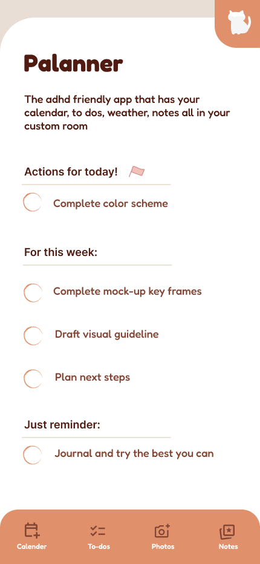
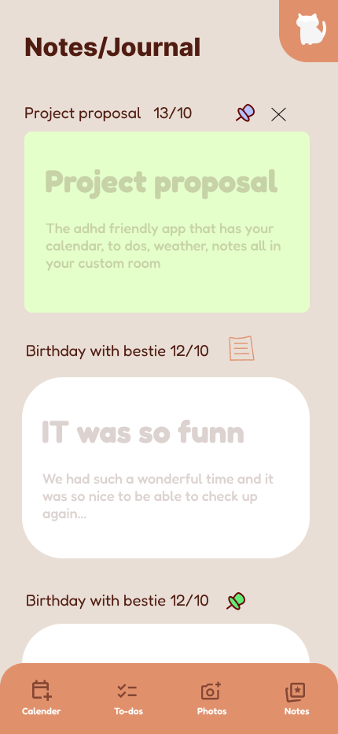
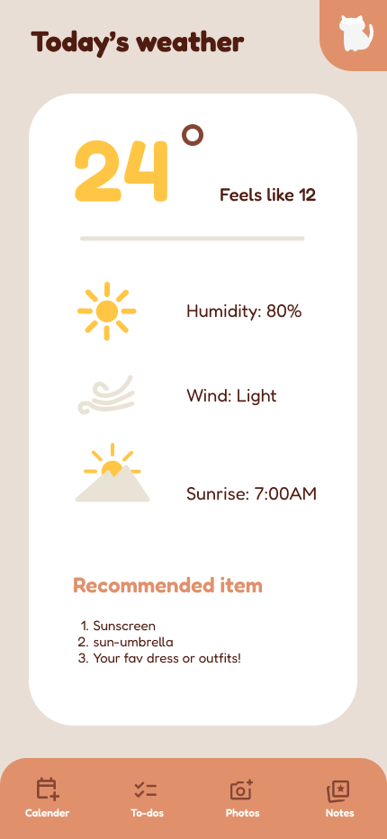
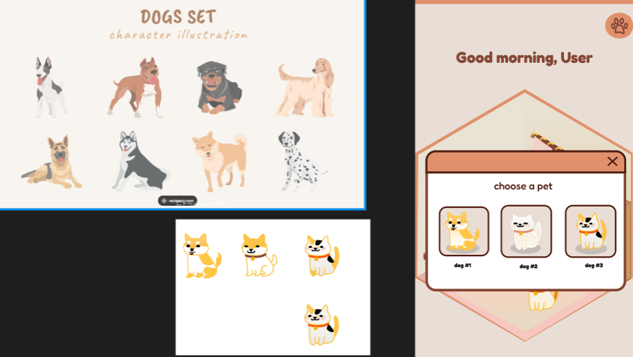
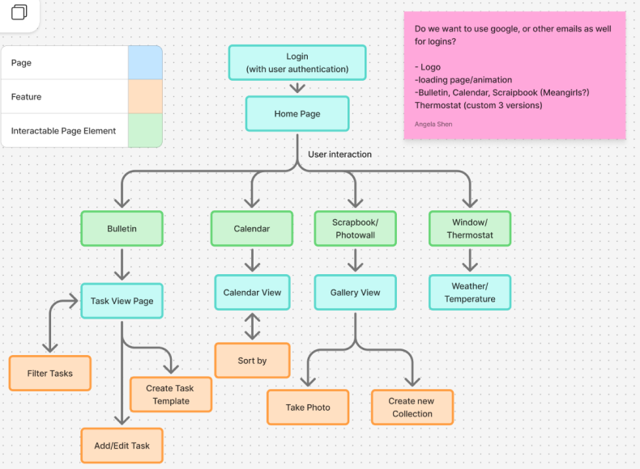

The Problem
Most productivity apps are designed for people who are already organized. For users with ADHD, the clinical UI of a standard to-do app creates friction rather than reducing it — the visual noise, context-switching between tools, and lack of emotional reward make it hard to build consistent habits.
Palanner's answer: turn your planner into a place you want to visit. By framing productivity inside a cozy, personalized room — one with a pet, ambient warmth, and rewards for showing up — the app makes daily organization feel like coming home.
Interactive Prototype
The full prototype walks through every core flow — from choosing your pet on first launch, through daily to-do management, notes, and the weather screen.
The App
Each screen is built around a single task, keeping cognitive load low. The warm terracotta and cream palette, rounded corners, and hand-drawn icon style all signal "this is a safe, low-pressure space."

Home — your room

To-Dos

Notes / Journal

Weather
.png)
Note detail view

Pet selection
Key Design Decisions
The Room as a Home Screen
Rather than opening to a list, Palanner opens to an isometric room — your personal space that reflects your day. The room persists as a visual anchor; all features are accessible from it, so users always know where they are. This reduces the disorientation that ADHD users often experience when navigating between tabs and menus.
The home room — a personal space that greets you by name and shows what needs your attention today
Pet Companion
The pet is more than decoration — it's the emotional core of the app. Users choose their companion on first launch, and the pet lives in the home room. This light gamification gives the app a reason to return to daily: not just to check tasks, but to see your pet. For ADHD users who struggle with intrinsic motivation, the pet provides a low-stakes external cue.
Pet selection — illustrated dog companions designed in a flat, warm style consistent with the rest of the app
Tiered To-Dos
Tasks are grouped into three explicit tiers: Actions for today, For this week, and Just reminder. This reduces the overwhelm of a flat list where everything feels equally urgent — a common pain point for ADHD. Users can process one tier at a time without losing sight of the larger picture.
Tiered task view — today, this week, reminders
Note detail — task context without leaving the app
Notes as Journal
Notes are dated and pinnable — designed to double as a journal. The large card format and muted colours invite reflection without demanding it. For users who benefit from externalizing thoughts to manage mental load, this blurs the line between task management and emotional processing in a useful way.
Notes / Journal — pinnable, dated, soft enough to feel like a diary rather than a database
Contextual Weather
The weather screen goes beyond temperature — it ends with a Recommended item list (sunscreen, an umbrella, your favourite outfit). This small detail makes planning tangible and reduces the micro-decisions of getting ready, which can be disproportionately draining for ADHD users.
Weather with recommended items — context that converts a data point into an actionable suggestion
Information Architecture
The navigation structure is deliberately flat — four tabs (Calendar, To-dos, Photos, Notes) are always visible at the bottom of the screen. No hidden menus, no nested settings. Every feature is reachable in one tap from anywhere in the app.

Core user flow — from login through the home room to every feature, with no dead ends
Reflection
Palanner taught me that good UX for neurodivergent users isn't about adding accommodations — it's about stripping away everything that doesn't need to be there. The visual warmth, the pet, the tiered tasks, and the persistent room are all ways of reducing friction without reducing capability.
Reducing friction for ADHD users turned out to mean reducing friction for every user under cognitive load — the same flat navigation, single-task screens, and tiered urgency that help a student with ADHD are exactly what help a clinician mid-shift.
The biggest challenge was resisting feature creep. Every proposed addition was tested against one question: does this help someone show up for their day, or does it give them one more thing to manage?